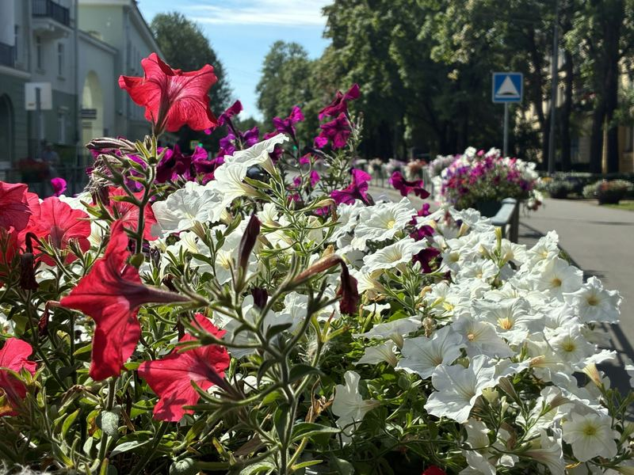
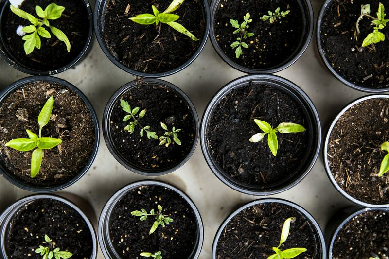
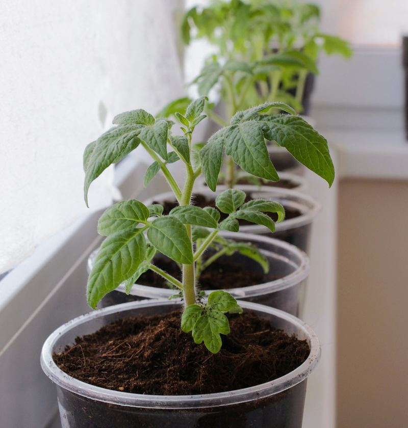
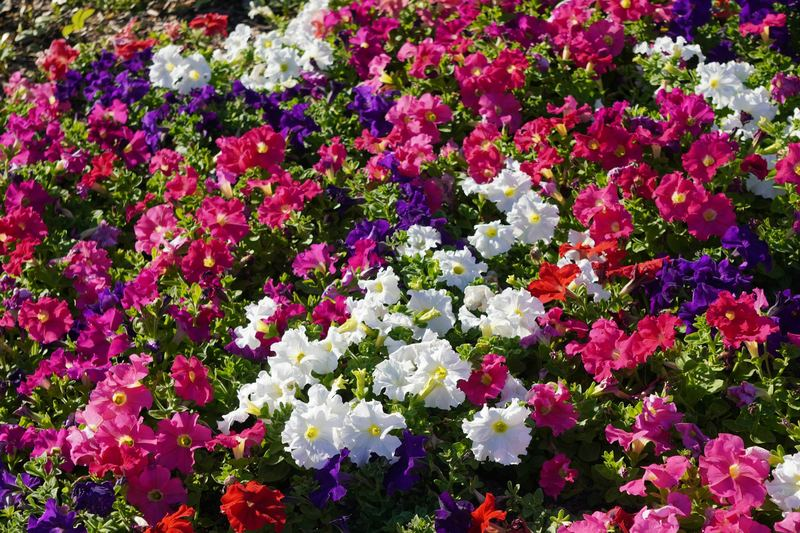
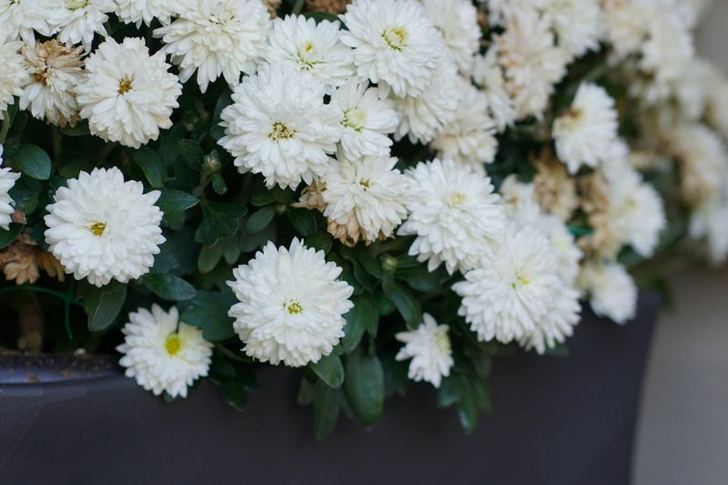

Sazenice a chryzantémy
Vlastimil Mučka, Opavská 42 v Dolním Benešově-Zábřehu. Od poloviny dubna do poloviny června prodávám sazenice zeleniny a balkonové i záhonové květiny, od září do listopadu macešky a chryzantémy.

Co prodávám teď
Sazenice zeleniny a balkonové květiny od poloviny dubna, macešky a chryzantémy od září.
- polovina dubna – polovina června: sazenice zeleniny, balkonové a záhonové květiny
- září – listopad: macešky a chryzantémy
duben – červen
Na jaře sazenice a květiny na balkon



září – listopad
Na podzim macešky a chryzantémy

4,8 z 9 hodnocení na Firmy.cz
„Dnes jsem měla tu čest setkat se s panem Mučkou – je to opravdu milý a příjemný člověk. Byla radost s ním nakupovat!“
Lucie A.
„Jsem velice spokojen s bohatým výběrem sazenic. Jen tak dál.“
Jan H.
| Pondělí | 8:00–17:00 |
|---|---|
| Úterý | 8:00–17:00 |
| Středa | 8:00–17:00 |
| Čtvrtek | 8:00–17:00 |
| Pátek | 8:00–17:00 |
| Sobota | 8:00–11:00 |
| Neděle | zavřeno |
Otevřeno i ve státní svátky, stejně jako v pracovní dny. Prodávám v sezóně, mimo ni se raději předem ozvěte.